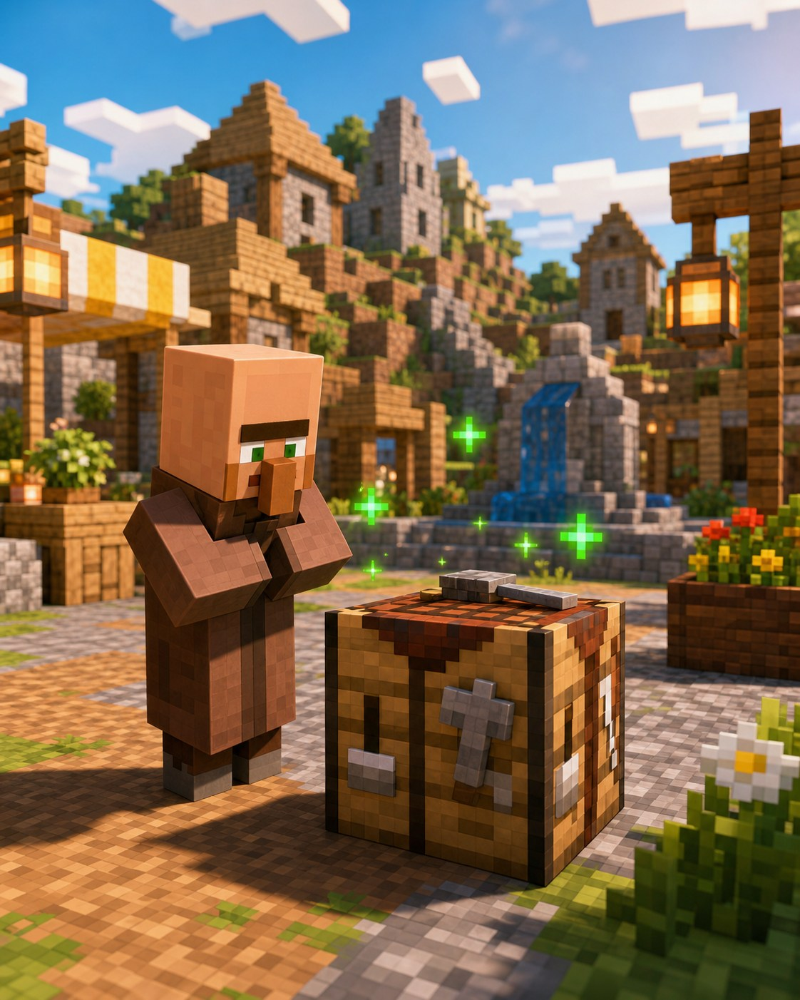
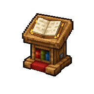

Корисне відкриття
Жителі знають секрети
Житель може
знайти
професію.
Робочий блок перетворює звичайного безробітного жителя на корисного сусіда з обмінами.

Навіщо це потрібно?
Професія показує, що саме житель готовий купувати й продавати. Наприклад, бочка робить рибалку, а кафедра — бібліотекаря.
Три прості дії
Як дати жителю професію
1Знайди дорослого без професіїУ зеленому одязі — нітвіт; йому професію не дати+
Шукай жителя без робочого одягу. Малюки ще не торгують, а нітвіт у зеленому одязі не бере робочі блоки.
2Постав робочий блок поручБочка, кафедра, компостер та інші+
Постав блок так, щоб житель міг до нього дійти. За мить його одяг і пропозиції зміняться.
3Перевір перший обмінДо першої торгівлі професію можна змінити+
Якщо пропозиція не подобається, прибери блок і постав знову. Але після першого обміну професія закріплюється.
Професія: як це виглядає

Робочийблок
професією
● Слідкуй, щоб житель не застряг за парканом або стіною.
Підказка мандрівникові
Важливо знати
Не кожен житель підходить
Малюк і нітвіт не стануть торговцями.
Перший обмін фіксує професію
Після нього блок уже не скине пропозиції.
Блок має бути доступним
Інакше житель може не встигнути «взяти» роботу.
Маленьке завдання
Спробуй за 5 хвилин
- Знайди у селі дорослого жителя без професії.
- Постав поруч бочку або компостер.
- Відкрий його меню й подивись на перший обмін.
★ Бонус: зроби маленький будиночок-майстерню для одного жителя.